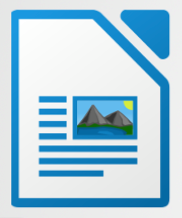
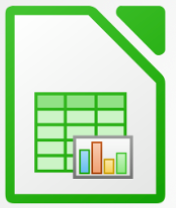
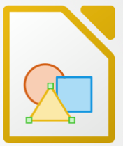
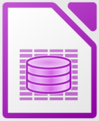

|  | - Writer: Skriv din 12-tals stil eller vær produktiv på arbejdet |
|  | - Calc: Lav komplicerede regnestykker eller hold styr på din økonomi med LibreOffices regnearksprogram |
- Impress: Lav kreative præsentationer, der fanger lytternes opmærksomhed | |
|  | - Draw: Du kan lynhurtigt og nemt lave flotte illustrationer til at understøtte dine tekstdokumenter eller præsentationer |
|  | - Math: Skriv matematiske udtryk på en flot og illustrativ måde, der vil gøre din matematiklærer glad. |